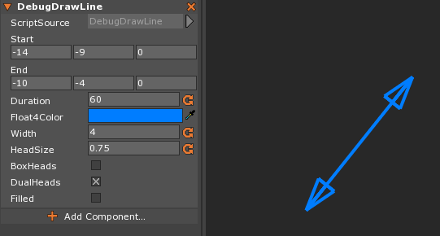
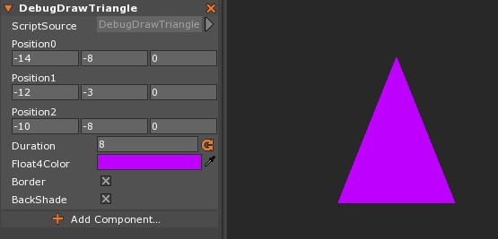

Debug Drawing
Debug drawing is a feature in Zero that allows you to draw lines and shapes within the editor for the purpose of debugging your game. They can be customized to a limited degree by design, existing solely to be used for debugging purposes, not to actually exist as graphics in a game. This page will look at the two most commonly used types of Debug Draw (Line and Triangle) and their parameters.
DebugLine
DebugLine, as you might have deduced from the name, draws a line between two points. You can define the start and end points, add “heads” to one or both of the ends of the line, choose its color, and a few other options. To begin creating a new DebugLine you must first instantiate a new variable of DebugLine, as shown in the code-block below:
{
//Instantiates a new instance of DebugLine
var debugLine = DebugLine();
//Sets parameters for the debug line
debugLine.Start(Real3(0,0,0));
debugLine.End(Real3(4,5,0));
//etc...
}
All of the available parameters for DebugLine, descriptions of each, and the syntax to use them in Zilch are listed below:
| Parameter | Description | Zilch Syntax |
|---|---|---|
| Start | A Real3 that defines the starting position of the line | DebugLine.Start(startPos : Real3) |
| End | A Real3 that defines the end position of the line | DebugLine.End(endPos : Real3) |
| Duration | A Real that defines the length of time (in seconds) that the line is displayed | DebugLine.Duration(duration : Real) |
| Float4Color | A Real4 that defines the color of the line | DebugLine.Float4Color(color : Real4) |
| Width | A Real that defines the width of the line | DebugLine.Width(width : Real) |
| HeadSize | A Real that defines the size of the head at the top of the line (default shape is an arrow) | DebugLine.HeadSize(size : Real) |
| BoxHeads | A Boolean that when set to true changes the heads to boxes | DebugLine.BoxHeads(hasBoxHeads : Boolean) |
| DualHeads | A Boolean that when set to true places Heads on both ends of the line | DebugLine.DualHeads(hasDualHeads : Boolean) |
| Filled | A Boolean that when set to true fills in the heads of the line | DebugLine.Filled(isFilled : Boolean) |
| SpaceId | An Integer that sets which space to draw the line in (to get the Integer, use this.Space.RuntimeId) | DebugLine.SpaceId(id : Integer) |
| Draw | This is what actually draws the line. Without it, there is no line | DebugLine.Draw() |
In the component where you add the DebugLine, you can make most of the parameters (with the exception of SpaceId and Draw) variables that have the Property attribute, allowing you to change and tweak the parameters on the fly. This could allow you to debug certain parts of your game even quicker. A simple example of such a component is shown in the screenshot below:

DebugTriangle
DebugTriangle draws a triangle defined by three vertices (the parameters named Position0, Position1, and Position2). It can have a border and be filled in with a user-defined color. Otherwise, the options for this type are a bit more limited. As with DebugLine, to begin creating a new DebugTriangle you must first instantiate a new variable of DebugTriangle, as is shown in the code-block below:
{
//Instantiates a new instance of DebugTriangle
var debugTriangle = DebugTriangle();
//Sets parameters for the debug line
debugTriangle.Position0(Real3(-2,0,0));
debugTriangle.Position1(Real3(0,3,0));
//etc...
}
All of the available parameters for DebugTriangle, descriptions of each, and the syntax to use them in Zilch are listed below:
| Parameter | Description | Zilch Syntax |
|---|---|---|
| Position0 | A Real3 that defines the first vertex of the triangle | DebugTriangle.Position0(firstVert : Real3) |
| Position1 | A Real3 that defines the second vertex of the triangle | DebugTriangle.Position1(secondVert : Real3) |
| Position2 | A Real3 that defines the third vertex of the triangle | DebugTriangle.Position2(thirdVert : Real3) |
| Float4Color | A Real4 that defines the color of the border/fill of the triangle | DebugTriangle.Float4Color(color : Real4) |
| Border | A Boolean that when set to true draws a border around the triangle | DebugTriangle.Border(hasBorder : Boolean) |
| BackShade | A Boolean that when set to true fills in the area of the triangle | DebugTriangle.BackShade(hasBackShade : Boolean) |
| SpaceId | An Integer that sets which space to draw the triangle in (to get the Integer, use this.Space.RuntimeId) | DebugTriangle.SpaceId(id : Integer) |
| Draw | This is what actually draws the triangle. | DebugTriangle.Draw() |
In the component where you add the DebugTriangle, you can make most of the parameters (with the exception of SpaceId and Draw) variables that have the Property attribute, allowing you to change and tweak the parameters on the fly. This could allow you to debug certain parts of your game even quicker. A simple example of such a component is shown in the screenshot below:
